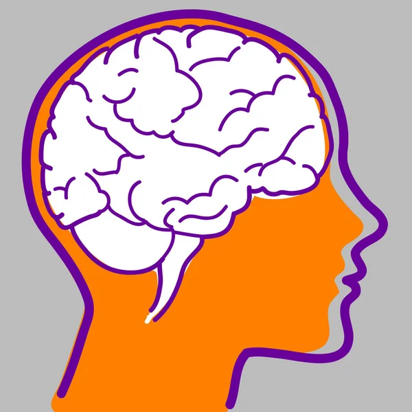

Neurobiología y Ética
La Base Científica de la Intervención Psicológica
Análisis del Incidente Crítico sobre Pseudociencias en Neurodesarrollo Infantil
Nombre del Estudiante | Asignatura: Bases Biológicas de la Conducta
Propósito de la Presentación
- Integrar: Conocimientos sobre las bases biológicas de la conducta.
- Analizar: Un incidente crítico sobre la proliferación de pseudociencias.
- Argumentar: La necesidad de una intervención psicológica científica y ética.
- Meta: Fortalecer el pensamiento crítico y la práctica informada en psicología.
El Incidente Crítico: Riesgo y Vulnerabilidad
- Contexto: Colaboración en un centro de atención a niños con trastornos del neurodesarrollo.
- Problema: Proliferación de terapias alternativas/pseudocientíficas sin sustento.
- Rol: Proponer estrategias informadas y éticas como psicólogo en formación.

Pseudociencias: Riesgos en Población Infantil
- Riesgo 1: Demora en la Intervención: Posponer tratamientos validados.
- Riesgo 2: Daño Económico y Emocional: Gasto de recursos y frustración familiar.
- Riesgo 3: Pérdida de Confianza: Descrédito de la psicología científica.
- Riesgo 4: Intervenciones Invasivas: Aplicación de métodos peligrosos o ineficaces.
Fundamentos Biológicos I: Células Gliales (M2)
- Función Clave: Soporte metabólico y estructural de neuronas (Astrocitos, Oligodendrocitos).
- Desarrollo Infantil: La mielinización (Oligodendrocitos) es crucial para la velocidad de procesamiento.
- Conexión con el Problema: Deficiencias en el soporte glial pueden estar relacionadas con algunos trastornos del neurodesarrollo.
Fundamentos Biológicos II: Comunicación Sináptica (M3)
- Función Clave: Base de la plasticidad neuronal, el aprendizaje y la memoria.
- Desarrollo Infantil: Desequilibrios en neurotransmisores (ej. Dopamina, Serotonina) se asocian a TDAH y TEA.
- Conexión con el Problema: Las intervenciones científicas buscan modular circuitos sinápticos específicos (farmacológicas o conductuales).
Fundamentos Biológicos III: Regiones Cerebrales y Función (M4)
- Función Clave: Corteza Prefrontal (CPF): Control ejecutivo, atención sostenida y planificación.
- Desarrollo Infantil: La CPF madura lentamente, siendo clave en los trastornos de atención (TDAH).
- Conexión con el Problema: El psicólogo diseña estrategias conductuales para modificar las funciones de la CPF (ej. TCC).
Pseudociencia vs. Ciencia: Ejemplos
Prácticas sin Evidencia (Pseudocientíficas):
- Terapia de "Integración Sensorial" sin validación.
- Terapia de "Flores de Bach" o "Homeopatía".
Intervenciones Validadas (Ejemplos):
- Análisis Conductual Aplicado (ABA).
- Terapia Cognitivo-Conductual (TCC).
La Distinción Fundamental
- Psicología Científica: Se basa en el Método Científico (experimentación, replicabilidad).
- Pseudociencia: Carece de evidencia empírica, no es falsable, se basa en anécdotas o testimonios.
- Criterio de Validez: Una intervención es válida si demuestra eficacia en ensayos clínicos controlados.
Conclusión: Rol Científico y Responsabilidad Ética
- Rol del Psicólogo: Ser un agente de salud que integra la teoría biológica y la práctica basada en evidencia.
- Responsabilidad Ética: El código ético obliga a usar solo procedimientos validados y a no exponer al paciente a riesgos.
- Reflexión Final: La neurobiología es el cimiento de nuestra credibilidad profesional y clínica.
Fuentes de Consulta (Formato APA 7)
- Bear, M. F. et al. (2016). *Neurociencia: La exploración del cerebro*. Wolters Kluwer.
- Carlson, N. R. (2014). *Fisiología de la conducta* (11ª ed., pp. 459-490). Pearson.
- Kandel, E. R. et al. (2001). *Principios de Neurociencia* (4 ed., pp. 4-20). McGraw-Hill Interamericana. https://reviewbooku.com/review/kandel-principios-de-neurociencia-4-4942842
- Bunge, M. (2013). La ciencia: Su método y su filosofía. Editorial Sudamericana. https://posgrado.unam.mx/musica/lecturas/LecturaIntroduccionInvestigacionMusical/epistemologia/Mario-Bunge-la-Ciencia-su-Metodo-y-Filosofia.pdf.

1 / 11